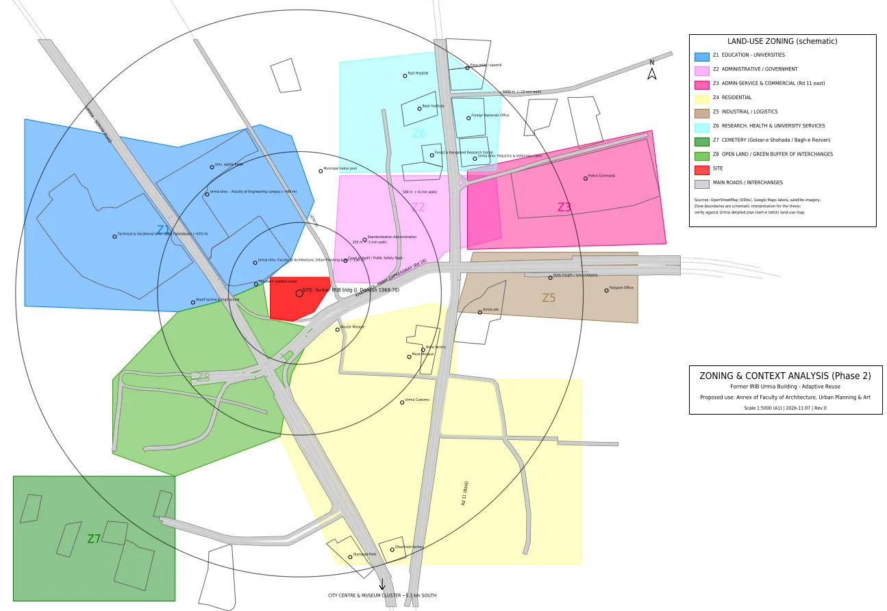

L'ex sede IRIB di Urmia
Un edificio di Jahangir Darvish (1969–70) con una sala di circa 1.350 m² senza nemmeno un pilastro, vuoto da anni. Questo studio si chiede come possa tornare a vivere.
1. L'edificio
L'ex sede della radio e televisione di Urmia, accanto alla superstrada Khatam al-Anbiya e a via Lotfi, è composta da quattro volumi quadrati con coperture a falde, disposti attorno a una fenditura a croce su un podio a gradoni. La superficie coperta è di circa 2.000 m² e davanti si trova una rotatoria circolare di circa 95 m di diametro.
L'elemento principale è la sala: circa 37 × 37 m, coperta da quattro gusci in calcestruzzo armato spessi circa 15 cm, che portano i carichi ai pilastri in muratura attraverso nervature diagonali e compluvi a croce. Un lucernario centrale, a circa 12 m di altezza, illumina il centro della sala.

2. Danni
Dalle immagini pubblicate, i problemi principali sono: infiltrazioni d'acqua dalla copertura degradata ed espulsione del copriferro sotto i gusci e i compluvi, tracce di fuliggine e incendio su pareti e soffitto, controsoffitti pendenti. Un giudizio definitivo su ciascuno è possibile solo dopo sopralluogo e prove.
3. Quale nuova funzione?
Per l'edificio è stata annunciata una destinazione museale. Questo studio confronta tre opzioni con sette criteri e ne propone un'altra: un campus distaccato della Facoltà di Architettura, Urbanistica e Arte dell'Università di Urmia, distante solo circa 190 m. Il polo museale della città è a circa 5,3 km, lungo il percorso turistico del centro.
| Opzione | Punteggio ponderato (su 100) |
|---|---|
| Campus universitario + galleria pubblica | 92 |
| Uffici | 59 |
| Museo | 53 |
La parte museale non scompare: una galleria permanente sulla storia dell'edificio, sull'opera di Jahangir Darvish e sulla storia della radio e televisione di Urmia resta aperta al pubblico.

4. Proposta progettuale
L'idea centrale è che la sala senza pilastri resti un unico spazio. Nessun nuovo elemento tocca il guscio in calcestruzzo; gli spazi sono definiti da pannelli autoportanti e reversibili alti 2,70 m, così la copertura resta visibile da ogni punto della sala.
- Gli assi a croce sotto i compluvi diventano una "strada espositiva", e il centro della sala, sotto il lucernario, un forum per revisioni e conferenze.
- I quattro quadranti: tre laboratori di progettazione e una galleria permanente.
- Servizi solo nei volumi bassi perimetrali; la torre in mattoni diventa un camino solare per la ventilazione naturale.
- Superficie utile totale circa 1.735 m²: 55% didattica, 35% pubblica.


5. Miglioramento sismico
Principi: minimo intervento, compatibilità dei materiali, reversibilità e conservazione del paramento in mattoni e del guscio in calcestruzzo, che definiscono l'edificio. Una valutazione preliminare indica che la debolezza principale è la stabilità fuori piano delle pareti in muratura alte e snelle.
- Controventi verticali in acciaio dietro le pareti e un cordolo continuo in sommità, che collega anche il guscio alle pareti.
- Rinforzo a taglio delle pareti con intonaco armato TRM a base di calce, invece di un pesante placcaggio in calcestruzzo.
- Valutazione del guscio con carotaggi e prove di corrosione; rinforzo in fibra di carbonio se necessario.
Riferimenti: linee guida iraniane per la riabilitazione sismica degli edifici esistenti (Pubblicazione 360) e degli edifici in muratura non armata (Pubblicazione 376). Il progetto definitivo seguirebbe un rilievo accurato, prove sui materiali e analisi non lineare, con lo spettro della 5ª edizione della norma 2800.

Scarica i disegni dello stato di fatto
I disegni dello stato di fatto dell'edificio (planimetria, piante del piano terra e della copertura, sezione e prospetti) sono disponibili in PDF per studenti e interessati.
Scarica il PDF (A3, 3 tavole) Richiedi i file AutoCAD
I file AutoCAD vengono condivisi solo per lavori accademici, su richiesta diretta.
Hai ricordi o foto di questo edificio?
Se hai lavorato in questo edificio o hai foto d'epoca, ci farebbe piacere riceverle. Con il tuo permesso e citando il tuo nome, saranno aggiunte alla galleria del caso studio.